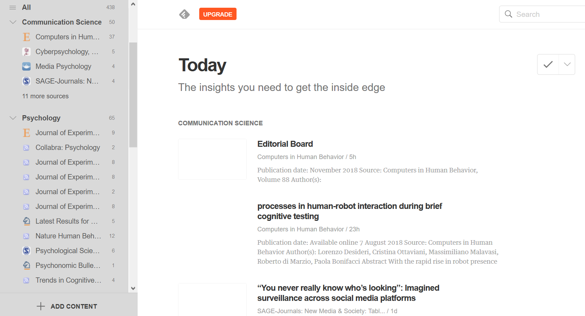

The new academic semester is almost upon us, and that means lots of new grad students. As I’m entering the fourth and final year of my own PhD, this got me thinking: What tools would I have liked to know about when I started?
What do I mean with this? Well, see for yourself whether you recognize any of the following behaviors:
You type references by hand – over and over and over.
You manually recode variables in SPSS and forget what you did about half an hour later.
Everyone in your department is talking about this crazy new paper that came out. You pretend you have to go to the bathroom and frantically fire up Google Scholar on your phone because somehow you completely missed this paper.
Your left eye starts twitching nervously every time you see anything even resembling a line of code.
You want to do a cool study, but the data cannot be analyzed with the good old ANOVA you’re familiar with. Instead, you run the study a different way so the data fit the analysis you know.
You have heard of this thing called preregistration and open science, but it sounds frightening and complicated.
If you are the beginning of your PhD and you recognize one or multiple of those behaviors, then please keep on reading. I believe it is crucial you start using these tools early in your PhD, because they will make your life so much easier.
However, if you left all of those behaviors behind you long ago, well, you can close this tab and save yourself ten minutes.
Disclaimer I: Obviously, this post is inspired by my own experiences. My field is somewhere between Communication Science and Psychology. Whereas I believe that most of the tips and tools that follow apply to a wide range of the Social Sciences, some of the concrete examples might apply more to my field than to yours.
Disclaimer II: I’m not saying you should use the same tools I do. There are a lot of other ones around that might work better for your particular needs. But it’s a good idea to be aware of them.
Alright, enough disclaiming, here we go, in no particular order:
Reference Manager
This one might easily be the one tool that saves you the most time. I see quite a lot of students (and a disturbing amount of senior colleagues) either type their references by hand or copy them from Google Scholar.
That approach might work when you have ten references for a seminar paper. But during your PhD, you will need to manage hundreds of references (or thousands if you only read the abstracts). Typing will not do for that many papers (unless you have strong masochistic tendencies). The good news: You don’t have to! Reference managers can do that work for you – and much more. Not only do they keep track of all papers you ever read; you can also assign tacks, notes etc. Even better: Once you have papers in your library, the manager builds the reference list for your article automatically.
There are loads of different reference managers (e.g., Zotero, Mendeley, EndNote etc.) and I don’t want to review all of them here. Basically, they do the same thing anyway. Just google ‘comparison reference manager’ and you’ll find a lot of info.
I often hear the advice to use the manager that is also used at your institution. Personally, I started using Mendeley for that reason (and because it has the prettiest interface by far). However, I wish I hadn’t. For one, Mendeley is owned by Elsevier1. Second, Mendeley has started encrypting your library. So if you care about open source and don’t want to pay money for a reference manager, I recommend Zotero at this point.
Note-taking
Now that you’re an academic, you’ll have lots of meetings. A lot of things will be said during those meetings. And an almost equal amount of things that were said during those meetings will be forgotten by you – often immediately after, sometimes during those meetings.
In my experience, I would always take notes, especially in meetings that concern your project. In the beginning of my PhD, I would frequently tell myself that I don’t need to write the thing down because I will remember it. Needless to say, to this day I cannot remember a single one of those things.
See note-taking as a sort of protocol, meaning take notes during and after meetings. Should you find yourself in a situation where a supervisor makes a suggestion that completely contradicts what you agreed upon last week… You see where I’m going with this.
This is not to say you have to write novels. But write down important ideas and decisions. That includes a cool idea for a study you have on your commute. For that reason, I recommend digital note-taking tools such as OneNote or EverNote. Both have apps that make it easy to quickly scribble down thoughts wherever you are.
Reference managers also let you keep notes when you read papers. This helps organize your literature even further. No more “I know I read about this somewhere, but which paper was it again?”.
Keep track of the literature
Once you have selected a topic that interests you, it’s important to keep track of the literature. It might seem ancient, but RSS feeds are a great way to stay up-to-date! Almost every journal has an RSS feed. Go to their website and look for the RSS symbol.
Once you find it, you can easily copy-paste that link into an RSS-reader. I use Feedly.2 Here you can enter the RSS link into the search field and follow that feed. I recommend to this for all major journals that are relevant for you. Feedly has the advantage that you can group your journals by tags.

However, sometimes articles that are relevant to you appear in journals you don’t have in your RSS feed. Another option to keep track of literature is to set up Web of Science or Google Scholar alerts. Just type in relevant key words and create an alert. Web of Science even supports RSS, so you can put your alert into Feedly. Unfortunately, Google Scholar does not, so you will need to get email alerts.3
Follow blogs
Journals are nice and all, but a lot of my colleagues prefer blogs. Sure, they don’t go through peer review, but they don’t have to if you are interested in practical advice or the author’s opinion. Google the scientists whose work you find interesting; chances are they have a blog.
Blogs often contain extremely useful tutorials or practical recommendations. Even more important: Blog posts don’t need to be put on halt for half a year until a journal reviews and publishes them. Personally, I have learned a lot from some of these blogs:
There are many more, and I encourage you to just google your way around topics that interest you. The best part: Most blogs have an RSS feed, so you can add them to Feedly!
Join Twitter
This one might sound weird, but Twitter is probably my primary source to keep up with scientific developments. A lot of scientists are on Twitter, share their thoughts, new papers, opinions etc. As a matter of fact, I got the idea (and instructions) for creating a website from a tweet:
{{% tweet "993410504570888192" %}}
Moreover, hierarchies on Twitter are quite flat, so if you have a question, why not just tweet at someone? They’ll likely reply – and others with the same question will be thankful as well. For example, when a colleague of mine had a question about an analysis we were unsure about, he asked the expert on Twitter and got an answer:
{{% tweet "995041880869097472" %}}
I also know a couple of colleagues who got jobs because they saw the listing on Twitter. I cannot emphasize enough how useful Twitter is to stay on top of what’s going on in your field. You don’t need to tweet if you don’t feel comfortable (I rarely tweet). For Psychology, I found following these accounts extremely informative:
Okay, at this point you’re thinking science content has completely taken over what used to be the realm of entertainment. However, there are many good science podcasts that are entertaining! Plus, they are a great way to stay on top of the field. Not to mention that it is reassuring to hear personal stories from other scientists who struggle with the same things you do.
Currently, I frequently listen to those podcasts4:
Familiarize yourself with preregistration and open science
This is a big one! Strictly speaking, it’s not reeeeeeally a tool. Then again, the Open Science Framework is a website, so I’d say that counts.
Preregistration and open science are the way of the future for science (and some would argue of the present). I am a firm believer that in 20 years, people will look back at 2018 and find it extremely strange that we did not preregister all of our studies and make them available.
If you have no idea what I’m talking about, this article does a nice job explaining the so-called replication crisis. And if, ironically, you haven’t come to this blog to read, for those audio-visually inclined, here is a great video about the crisis5:
As a PhD, you need to be aware of the current crisis and of what is considered best research practices. This doesn’t mean you need to agree with everything the advocates of the open science movement say; but you should at least look at their arguments and make up your own mind. If you want good science it would be careless, even negligent, to ignore what is going on in the field right now!
Learn R
Yeah. That’s right. You might tell yourself “I am not good at stats” or “SPSS can do everything I need”. I used these arguments myself when I started my PhD. And I admit that learning R can be frustrating, particularly in the beginning. But to quote an excellent blog post by Dale Barr:
If all you are doing is plugging in pre-formatted, pre-cleaned, canned datasets, cranking out a t-test or an ANOVA
and maybe also a bar graph, the software you use does not make a huge difference. But if that is all you are
teaching, your students will be ill-prepared when they first encounter their own messy datasets.
In the light of the replication crisis, reproducible analysis has become the gold standard. It is just superior to write a script from data import to final analysis, and you can achieve this easier with a code-based program than with the point-and-click interface of SPSS.